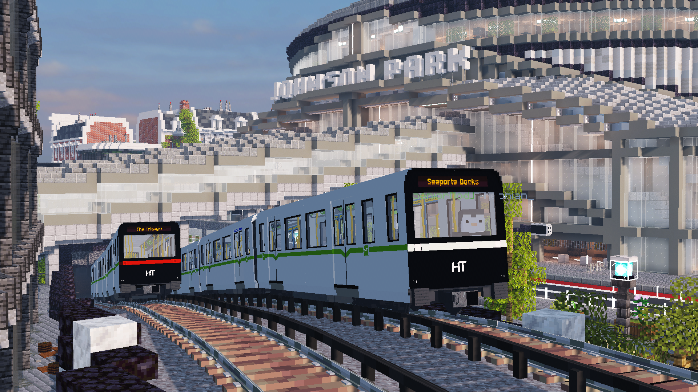
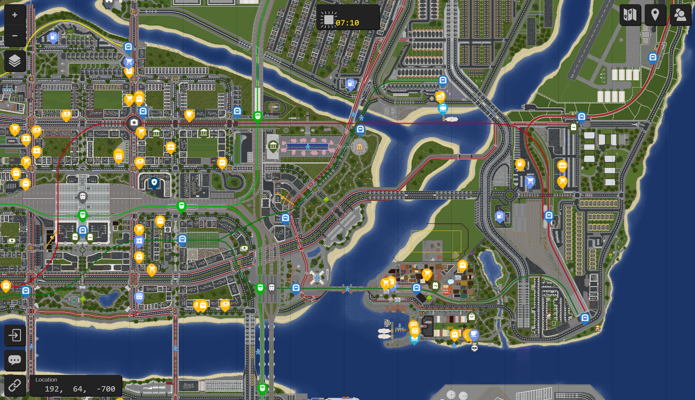
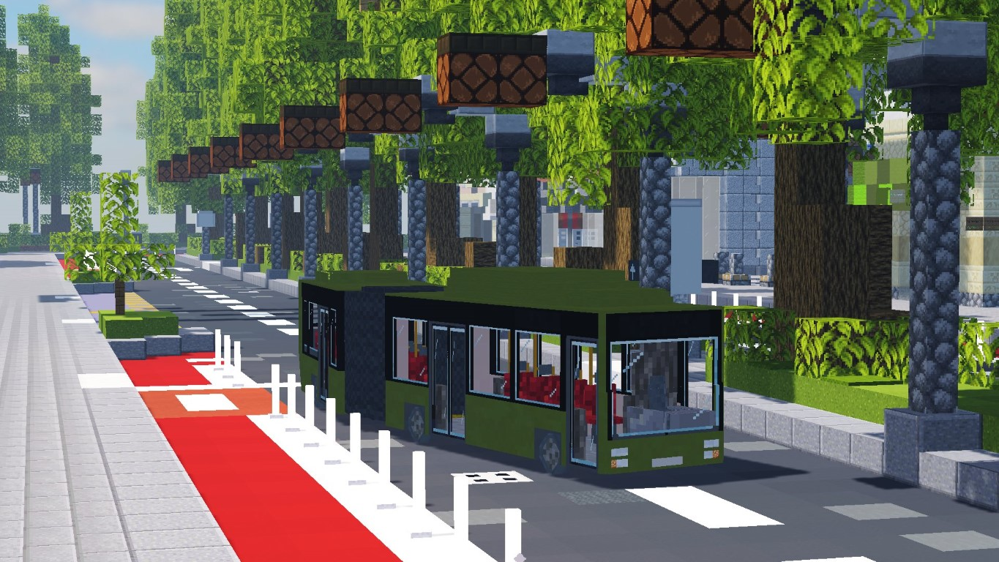

All services on the Commuter Network (Commuter Lines C1, C11 and C2) are suspended until further notice due to track replacement and technology upgrade works. A rail replacement bus service is operating direct between National Mall Metro Station and Stenford Seafront Bus Station. For Olympic Park, please use Metro Line M2 and alight at Northshore. For Oxville and Roslagen, please use Bus Route 11 or Metro Line M31. HarlonTransit apologises for the inconvenience that this work will cause.


Carousel items
-

Information about the new Metro Line M5, your new connection to everything Harlon.
-

Information about the newly-reopened Metro Line M31!
-

HarlonTransit's official network map is a reliable companion for navigating our network.
-

Find stations, landmarks and more on the server and track your location in real time.
-

Find information about our network that you can help contribute to!